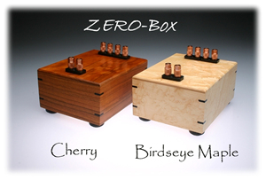
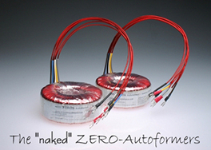
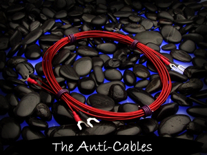

The two different versions of the ZEROs shown here are all made of
the same original toroidal autoformer, and all have the ability to
multiply a speakers impedance by 2x, 3x, or 4x. For example, the ZERO can
transform a 4 ohm speaker into an 8 ohm, 12 ohm, or 16 ohm speaker
depending on which two of four leads/connections are connected to the
amplifier. They are very helpful in matching speakers to amplifiers, even
amplifiers that already have a variety of output taps available realize
benefits.

The ZERO-Box >>>
The "naked"
ZERO-Autoformers >>> |
The Hi Performance-Low Cost Solution to
Typical Speaker Cables
The solid Copper lead out wires on the ZERO-Autoformers are so
transparent sounding, I have made them available on their own. Since they
virtually eliminate the most common problems of typical speaker cables
(usual sonic signatures, and high prices) they have been named the
"ANTI-CABLES"

Here is what one customer told me about my Anti-Cable wires:
"I decided that it would make sense to give Paul's Anti-Cables a try.
What the heck, they're cheap, I ordered a set and - HOLY *$#&!!! I had no
idea what a dramatic difference these cables would make. Soundstage opened
WAY up this time; highs not only stayed smooth, but EXTENDED and stayed
smooth. Now I actually hear the steel strings against the fret board
of an acoustic guitar. The presentation is completely effortless. Response
is super-quick, drums have more slam, acoustic bass is more realistic. These
cables are incredible - and a 7' set cost me all of $70!!!"
The Anti-Cables >>>
|